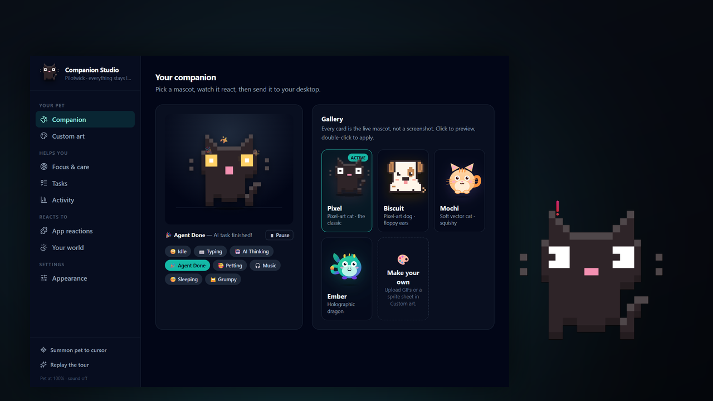

Pilotwick reacts to your real work — the agent that's thinking, the editor you're in, the build that just went red. It carries your tasks and focus timer too. All of it runs on your machine.
git clone https://github.com/Hotragn/pilotwick

Start a build and go do something else. When it breaks, the companion
turns red and keeps a chip up until you deal with it. Reads your own
git and gh — nothing is proxied through us.
Stop babysitting a terminal. It reads whichever assistant you use, not one vendor's.
Tasks with real reminders, a timer beside the companion, and an honest record of where the day went.
gh CLI, with credentials you already authorised.